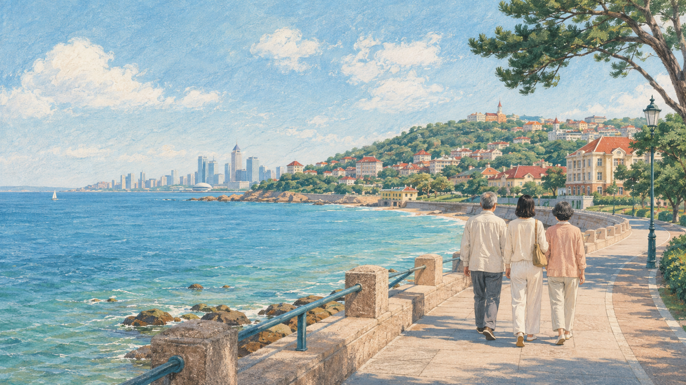

09.05周六
DAY 1
初见青岛 · 浮山湾夜色
CBD万达 → 五四广场 → 奥帆中心 → 浮山湾夜游 → 酒店 / 台东
抵达后先安顿与休息
不安排预约项目，留足交通与入住缓冲。
五四广场 → 奥帆中心
沿海边慢走，边走边看；不追求走完全程。
可选：从奥帆码头坐船出海
日落航线或夜游浮山湾二选一，常见票价约 ¥100/人，具体以当天班次为准。
奥帆中心附近晚餐
饭后看夜景；有体力可去台东尝小吃，累了直接返回酒店。
✦ 轻松开关不坐船也很好：沿情人坝散步，在岸上欣赏浮山湾夜景。

2026.09.05 — 09.07 · 住青岛 CBD 万达
以打车为主，把景点按海岸区域串联；每天只保留一到两个重点。所有延伸路线都能随时缩短，让父母走得舒服、看得尽兴。
不安排预约项目，留足交通与入住缓冲。
沿海边慢走，边走边看；不追求走完全程。
日落航线或夜游浮山湾二选一，常见票价约 ¥100/人，具体以当天班次为准。
饭后看夜景；有体力可去台东尝小吃，累了直接返回酒店。
建议预约 09:00 入馆，携带身份证原件。
室内与室外展区按体力取舍，不必每处都走到。
体力好：去小青岛远看栈桥与青岛湾；想轻松：走琴屿路、鲁迅公园。
午饭后安排一段完整休息，不连续赶景点。
信号山不高，慢走约十几分钟登顶；教堂按兴趣决定是否停留。
天气好时前往；阴雨或疲劳可直接省略。
推荐永乐啤酒屋，也可尝大锅强蒸海鲜。
建议预约较早时段，参观约 1.5–2 小时。
只选花石楼周边林荫路，不做大范围徒步。
在沙滩和海边停留，之后返回酒店附近休息。
体力好：雕塑园开始走；想轻松：直接到海之恋，向小麦岛方向散步。
返程时间允许且天气晴好时安排，结束后开启返程。
不特意绕远，按当天位置选就近门店；热门时段建议提前取号。
鲅鱼水饺等海鲜水饺，适合作为轻松正餐。
家常鲁菜与水饺选择丰富，适合长辈。
青岛海鲜与本地菜，建议按当天路线选择就近门店。
团岛晚餐重点选择，可加工市场采购的海鲜，也可尝大锅强蒸海鲜。